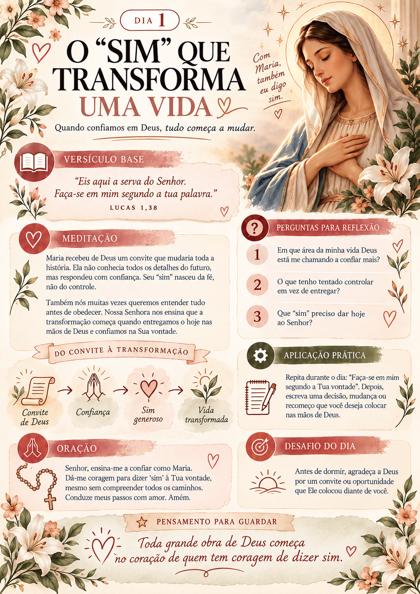
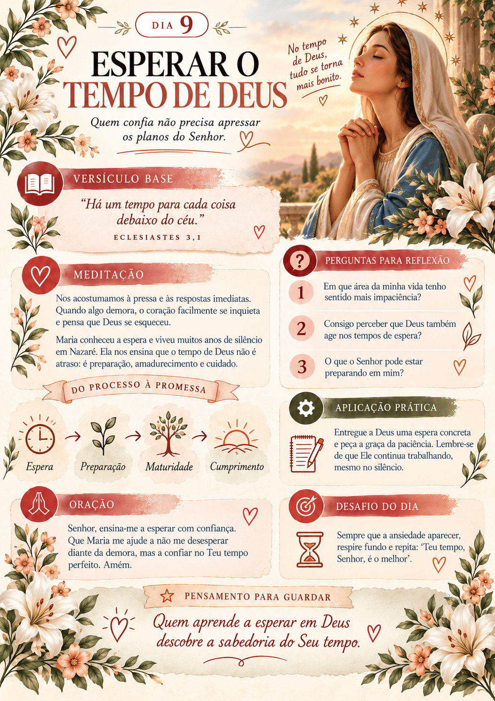
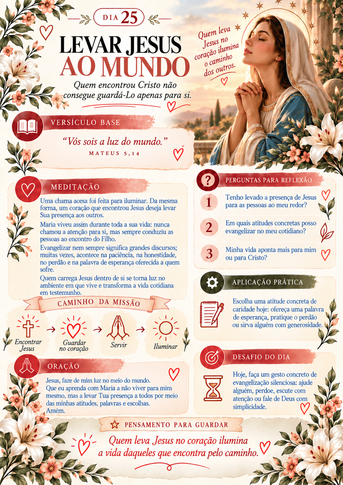
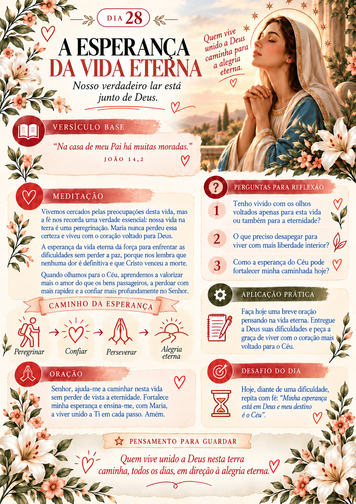

A dificuldade de separar um momento de qualidade para Deus na correria do dia a dia.
Livro Digital Interativo
Encontre a paz e aprofunde sua fé diariamente.
Um guia prático para 31 dias de oração, leitura bíblica e reflexões profundas com a Mãezinha do Céu, projetado especialmente para a tela do seu celular.
- 31 Dias
- De Reflexão
- Digital
- Leia no Celular
- 7 Dias
- De Garantia
Reflexões Diárias
Passagens Bíblicas
Perfeito para Telas
Orações Guiadas
Momento do Rosário
Por dentro do material
Veja como é o devocional por dentro




Depoimentos
Veja o que estão dizendo sobre o devocional.


O Problema
O mundo agitado está roubando sua paz e sua conexão com Deus.
Muitas vezes, começamos o dia imersos em problemas e na correria da rotina. Sem um momento de pausa para a alma, a ansiedade toma conta e nos distanciamos da nossa fé.
Sentimento de vazio e falta de direção ao tentar orar e não saber por onde começar.
O desgaste emocional e espiritual por carregar o peso dos problemas sem entregá-los.
A Solução (O que vem no livro)
Um caminho de oração guiado pelas virtudes de Maria.
Leituras Profundas
31 devocionais diários com passagens bíblicas selecionadas e meditações inspiradas em Nossa Senhora.
Momento do Rosário
Reflexões específicas para cada dia que acompanham a oração do Rosário, tornando a prática muito mais conectada.
Feito para Telas
Esqueça os PDFs pequenos e difíceis de ler. Nosso material é diagramado e otimizado para celulares e tablets.
Como funciona
Um passo a passo simples para o seu dia.
Compre Online
Pagamento seguro e liberação imediata do arquivo.
Receba o PDF
Baixe diretamente no seu celular ou tablet. Otimizado para leitura em tela.
Escolha o Horário
Separe alguns minutinhos do seu dia, de preferência logo pela manhã.
Faça a Leitura
Leia a meditação do dia, a passagem bíblica e fortaleça sua devoção.
A Escolha
Encontre o refúgio na sua fé todos os dias.
Ignorar a fé diária
Viver na ansiedadeAcumular fardos e preocupações sem buscar a fonte de graça, terminando os dias ainda mais cansado e sobrecarregado.
O Caminho da Paz
Apenas R$ 14,90Um pequeno investimento para ter em mãos um manual guiado para os próximos 31 dias que vai trazer conforto, esperança e intimidade com Deus.
Design Premium para Celular
Diferente dos PDFs comuns que precisam de muito zoom, este devocional foi desenvolvido pensando na melhor experiência de leitura na tela. Fontes grandes e legíveis, respiros visuais elegantes e uma estruturação perfeita para o seu conforto visual onde quer que você esteja.
Oferta Especial
Comece a transformar seu dia agora.
O acesso é enviado no seu e-mail imediatamente após a confirmação. Baixe, abra no celular e faça a leitura do seu primeiro dia agora mesmo.
Acesso Imediato
Promoção termina em
12:00
Livro Digital: 31 Dias com Nossa Senhora
- Arquivo PDF perfeito para ler no celular
- 31 Meditações e Reflexões Diárias
- Passagens Bíblicas em todos os dias
- Reflexões do Rosário Inclusas
- Garantia Incondicional de 7 Dias
🎁 BÔNUS EXCLUSIVO
30 Marcadores de Página de Nossa Senhora Aparecida
Lindos marcadores temáticos prontos para impressão. Perfeitos para presentear familiares e amigos ou usar na sua Bíblia e livros de oração.
De R$ 34,90 por
R$ 14,90
QUERO GARANTIR MEU ACESSO
Pagamento seguro · Acesso Imediato · Único pagamento
Dúvidas Frequentes
Ainda não tem certeza? Nós respondemos.
O material é físico ou digital?
O devocional é 100% digital. Você receberá o arquivo em formato PDF, que é perfeito e otimizado para ser lido no celular ou tablet com todo conforto visual.
Como vou receber o arquivo?
Logo após a aprovação do pagamento, você receberá um e-mail com o link direto para baixar o arquivo original e salvar no seu dispositivo.
E se eu não gostar?
Nós oferecemos 7 dias de garantia incondicional. Se você achar que o material não foi de ajuda para a sua espiritualidade, basta enviar um e-mail solicitando o reembolso do seu dinheiro e nós devolvemos tudo.